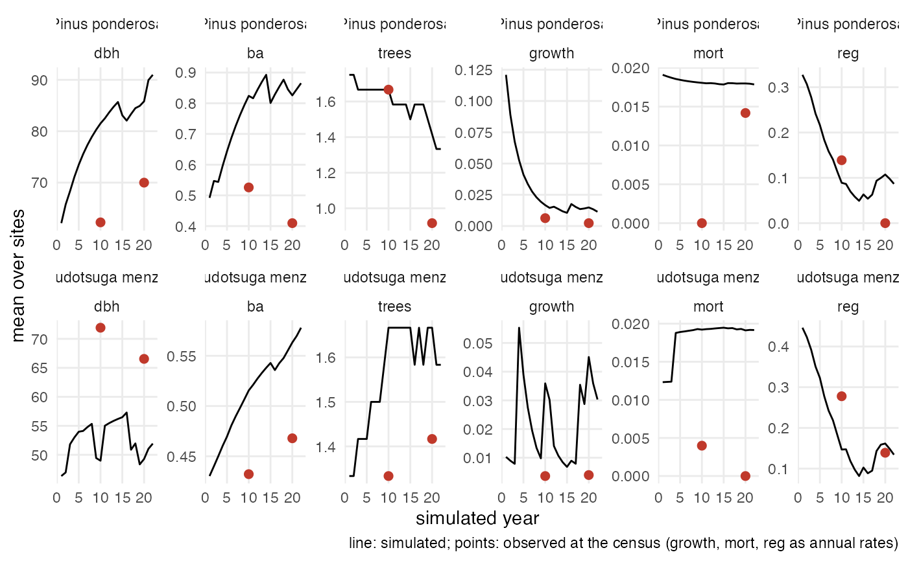

Pairs a simulation with the observed data and draws, per response, how well
they agree. The simulation is aggregated the way fit() scores it: the stand
states dbh, ba and trees at the census year, growth and mort
compounded over the period_length years before the census (the geometric
mean of 1 + g minus one; one minus the geometric-mean survival), and the
expected recruits (r_mean_ha) summed over them for reg (see finn_loss
and, for the observed columns, finn_data). An observation is placed as in
fit(): its year is a year of the env the simulation was run with, and
the simulated step is the position of that year among the years of env
(for a plain site table, which does not carry those years, year is taken
as the step itself). Observations of a site or a species that is not in the
simulation, or of a year that is not simulated, are left out with a message.
Both tables may come in long (variable, value) or wide form.
Arguments
- sim
The result of
simulateForest()orpredict()for the sites ofobs, started from the same initial state (or its site table).- obs
Observations as
makeObsData()returns them (wide), or long withvariableandvalue;period_length,n_at_riskandn_diedare used where present.- type
"scatter"(default),"heatmap"or"timeseries".- species
NULL(default) pools all species in one panel per response; species numbers draw one row of panels per species.- response
Responses to draw, any of
"dbh","ba","trees","growth","mort","reg"(and"dbh_max"withtree_data);NULL(default) all that are observed.- sites
Site ids to include;
NULL(default) all.- tree_data
NULL(default), or the observed trees in the format of thetree_dataoffit()(see finn_data:siteID,year,species,dbhat the start of the interval, andgrowth,died,period_length; the interval is taken fromobswhen the trees do not carry it): adds the largest diameter (dbh_max) to the comparison.- n_species
Number of species in the recruitment panel. Default
12.- species_names
Species names for the labels: a character vector in species order, a vector named by species number, or a table with
speciesandspecies_name.NULL(default): the names the simulation carries from the model, else thespecies_namecolumn ofobs.- ...
Unused.
- x
A
finn_comparisonobject (the scatter view ofcomparePlot()).
Value
type = "scatter": a finn_comparison object (a list of the
ggplot panels scatter, mort and reg, which print() arranges on
one page), invisibly; type = "heatmap": a finn_heatmap object (the
panels skill and ratio, side by side when printed), invisibly;
type = "timeseries": the ggplot object, invisibly. It is printed. The
paired table is
attached as attribute "matched" and the skill measures as "skill"
(per response, and per species when species is given; the measures are
described in summary.finn_class()).
Details
type = "scatter"(default): observed against simulated fordbh,ba,treesandgrowth, with the 1:1 line and R2 (1 - SSE/SST) in each panel; for mortality the ROC curve of the interval death probability with its AUC (each tree at risk is one case,n_diedpositives andn_at_risk - n_diednegatives; without those two columns inobs, a scatter of the annual rates); for recruitment, whose site-level values are too noisy for a correlation, the ratio of simulated to observed recruitment summed over all sites, per species (then_speciesspecies with most observed recruitment). Withtree_data, the dbh panel shows the largest diameter instead of the mean: per site, census and species, or, all species pooled, per site and census (the maximum over the species), which is robust against a few large or many small trees. The simulation must have recorded its cohorts at the census steps (simulateForest(..., return_cohorts = <steps>), a step being the position of the census year among the years ofenv;evaluate()does this itself).type = "heatmap": the skill per species at a glance, every species a row (by name): R2 of every response and the AUC of mortality on the left, the ratio of simulated to observed on the right (log scale, white at 1, so over- and underestimation show as colours).type = "timeseries": the simulated trajectory over the years as a line and the observations as points at their census years, averaged over the selected sites. With all species pooled,baandtreesare the stand totals and the other responses the mean over the species.
plot(sim, obs) is the same as comparePlot(sim, obs) (see
plot.finn_simulation()).
See also
evaluate(), which returns the same comparison and keeps it on the
model, and
summary.finn_class(), which prints it; plot.finn_simulation() for the
simulation alone.
Examples
library(data.table)
sites <- 1:3
Nsp <- max(fia_obs_dt$species)
init <- makeInitCohorts(fia_init_trees[siteID %in% sites], Nspecies = Nsp)
FINN.seed(1)
m <- finn(N_species = Nsp, recruits_dbh = 12.9,
growth_process = createProcess(~ temp + prec, growth),
mortality_process = createProcess(~ temp + prec, mortality),
regeneration_process = createProcess(~ temp + prec, regeneration_capped))
fit(m, data = fia_obs_dt[siteID %in% sites], env = fia_env_dt[siteID %in% sites],
init_cohort = init, epochs = 2L, patches = 4, patch_size = 0.06,
plot_progress = FALSE)
#> ℹ weights: intercept-only baseline x your vector (dbh=0.00243, ba=12, trees=0.968, growth=1.84e+04, mortality=38.5, regeneration=0.768)
#> ℹ share of the objective at the intercept-only baseline (scaled): dbh=17%, ba=17%, trees=17%, growth=17%, mortality=17%, regeneration=17%
sim <- simulateForest(m, env = fia_env_dt[siteID %in% sites], init_cohort = init)
comparePlot(sim, fia_obs_dt[siteID %in% sites])
 plot(sim, fia_obs_dt[siteID %in% sites], type = "timeseries", species = 1:2)
plot(sim, fia_obs_dt[siteID %in% sites], type = "timeseries", species = 1:2)
